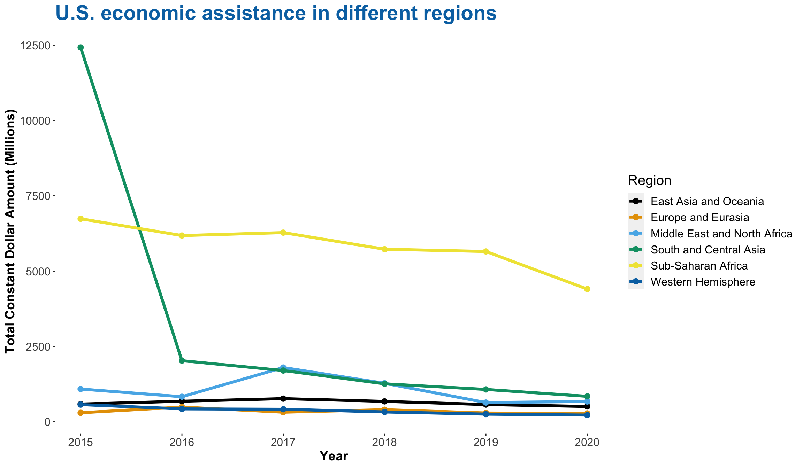

Chapter 4 Missing values
The dataset has a total of 365,0000 rows and 16 features of interest. As is summarized in Table 4.1 which computes the number of missing values for each variable, we see that data are missing only in two specific fields: Activity.Start.Date and Activity.End.Date. These two refer to the start and end dates of different US foreign aids program activities. These may cause issues that hinder our understanding of the chronology of the data. For example, with a majority of the dataset missing these two variables, it may be hard to generalize an overall pattern of the duration of the program activities. However, since none of the year column contains missing data, we can still surmise the approximate time frame of each activity implemented.
| variable_name | NA_rows_count |
|---|---|
| Activity.End.Date | 302423 |
| Activity.Start.Date | 282800 |
Also, we can take a closer look at the missingness pattern and observe for which combination of attributes, missing data are the most common. According to the results outlined in Table 4.2, observations that are missing both Activity.Start.Date and Activity.End.Date are the most dominant. Observations that do not have data for either Activity.Start.Date or Activity.End.Date come second. Noticeably, observations with data on Activity.Start.Date are significantly more than those with data on Activity.End.Date. This may indicate that the US government implements their foreign aid program activities that often do not have a designated end date.
| Activity.Start.Date | Activity.End.Date | Other.Variables | NA_rows_count |
|---|---|---|---|
| TRUE | TRUE | FALSE | 279546 |
| FALSE | FALSE | FALSE | 59323 |
| FALSE | TRUE | FALSE | 22877 |
| TRUE | FALSE | FALSE | 3254 |
To visualize the missingness pattern in juxtaposition with the number of missing rows for each column already mentioned and interpreted from the above summary tables, the following graph provides further details on the proportion of rows that are missing. We observe that around 80% of the data contain missing values for one or both of Activity.Start.Date and Activity.End.Date. More specifically, rows contain missing values for both of Activity.Start.Date and Activity.End.Date account for 76.6% of the dataset, and rows that have no missing values account for 16.3% of the dataset. 6.3% of data are rows that do not have values for Activity.End.Date, and 0.9% of data do not have values for Activity.Start.Date.
